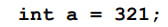

Программа выведет "Привет Вася"
Int
Объявление переменной в программе
При объявлении переменной, ей можно сразу задать значение
Ввод данных осуществляется с помощью входного потока - cin
функция - деления ( / ) "отбрасывает" последнюю цифру числа
функция - остаток от деления ( % ) выведет последнюю цифру десятичной записи числа
Ввод
Вывод нужного количества значящих цифр
Отбрасыване дробной части
Округление до ближайшего целого